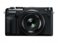

GFX 50R延续了Fujifilm GFX无反中画幅数码相机系统小巧、轻便和优越的图像质量等特性，同时机身比FUJIFILM GFX 50S轻约145g，薄约25mm。旁轴取景造型的设计可以在观察拍摄对象的同时，另一只眼睛专注取景器画面。这样可以查看并感受电子取景器中显示的拍摄对象周围场景的氛围。GFX 50R配备0.77倍369万像素的OLED电子取景器(EVF)。尽管搭载了较大的中画幅传感器，也能实现精确对焦。与35mm全画幅传感器相比，在相同焦距的拍摄下景深更浅。
整体大致满意
价格就是最大优点，不接受反驳
优点不提了，就说下缺点 1，取景器太差了，比手上xp2都不如，白天还行，光线一暗，拖影太厉害，很不好的体验 2，镜头太贵，每年一次的优惠价其实就可以了，4433的像场其实比135大不了多少，但价格真翻倍了 3，显示屏幕默认情况下有偏色现象，整体偏红 4，建议富士开放卡口吧，现在除了EF镜头其他转接都不能自动对焦，50R的手动峰值对焦体验不是很好，裂纹也没有了，手动有点累 暂时就这么多，至于有人评论体积越做越大的，我想说你找个比50R晓得机身再来说这话
看了看楼下的点评，现在都流行云评测了吗？那我也来云评测一个拉拉分，一个中画幅的机器，能做到这样的体积和价格，如果说有缺点，那缺点也是自己没钱了。
中画幅相对低廉的价格，不错的镜头群，还能转接，小巧的机身。
广角目前感觉还是稍微差点意思，能到等效14MM或者至少16MM就好了。
其实富士在做小做精做古典等方面 有绝对优势， 在徕卡不反对的情况下 可以尽量贴近 甚至有所超越 真的， 可惜 铁不成钢..
本来只看好富士的小而精机身与镜头..
也许受同行对手影响 东西越做越大 又变成傻大粗..
设计未如理想 身材太大，工艺欠精细。 整机造型不如XE3 协调美观 紧凑。 看样张显得平庸 没拍好。
画幅大 有想象空间 很吸引。
旁轴型机器还可以做的小一点 精致一点，不然..